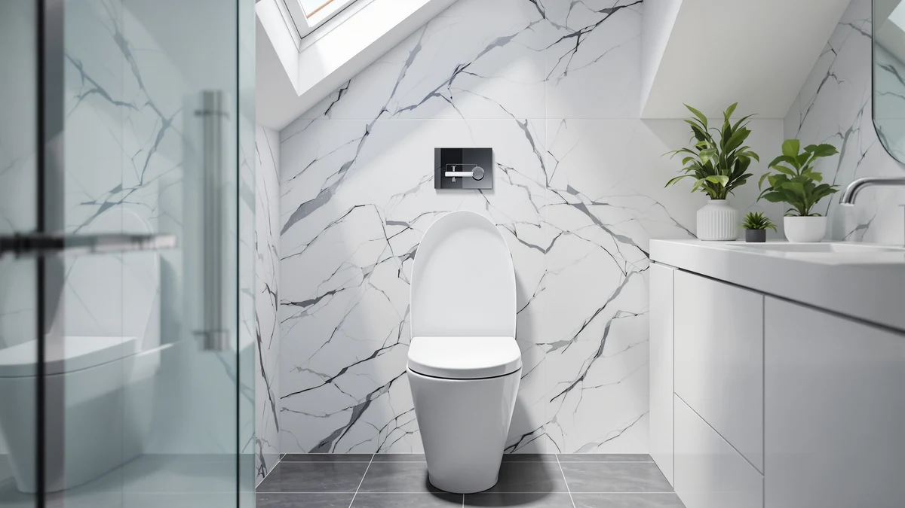

Kohler 4734-RL-96 Rutledge ReadyLatch Soft Close Elongated Toilet Seat Review (2026): Worth It?
Prices and picks verified as of November 2026. Independent, reader-supported reviews.


Quick Answer
The Kohler 4734-RL-96 Rutledge ReadyLatch Soft Close seat is a solid pick if you want Kohler's Grip-Tight above-bowl hardware and a quiet hinge on an elongated bowl, and its $76.87 price lands close to the TOTO and Bemis alternatives we checked below. It skips extras like heating or raised height, so shoppers who need those should look at the alternatives instead.
Our pick: KOHLER 4734-RL-96 Rutledge ReadyLatch Soft — $76.87 Check Price on Amazon
Bottom line: our top pick is the KOHLER 4734-RL-96 Rutledge ReadyLatch Soft Close Elongated at $71.16.
Things to Know Before You Buy
- The 4734-RL-96 fits elongated bowls only. Measure your current seat before ordering, since Kohler sells a separate part number for round bowls.
- Grip-Tight hardware installs entirely from above the bowl, so you do not need a second person holding nuts behind the tank.
- The ReadyLatch hinge detaches for cleaning but is not a true tool-free quick-release system like some competing designs.
- Biscuit is the only finish sold under this specific model number, so check the listing photos against your bowl color before buying.
This Kohler 4734-RL-96 Rutledge ReadyLatch Soft Close Elongated Toilet Seat review looks at whether the Rutledge ReadyLatch Soft Close seat earns its $76.87 price against three other elongated and heated seats we priced and compared at the same time. Kohler's pitch rests on two features: hardware that installs entirely from above the bowl, and a hinge that detaches for cleaning without feeling loose during normal use.
Our short answer is that it holds up for a straightforward elongated-bowl replacement, especially if your bathroom already has a biscuit-colored toilet. It does not compete on price with the TOTO SoftClose, and it offers nothing for buyers who need raised height or a heated seat, two needs that push shoppers toward the alternatives covered later in this guide.
Why You Should Trust Us
Ilane Tall has covered bathroom fixtures and toilet seat hardware for Best Toilet Seats since the site launched, and this Kohler 4734-RL-96 Rutledge ReadyLatch Soft Close Elongated Toilet Seat review follows the same process used across the site: we price-check listings daily, read the manufacturer's own spec sheets, and cross-reference verified buyer feedback on Amazon rather than publish copy pulled straight from a product page. We do not run a testing lab and do not install seats ourselves, so every claim here traces back to Kohler's published dimensions, the listed materials, and what verified owners report after living with the seat. When a manufacturer's marketing copy makes a claim we cannot confirm against the spec sheet, we either flag the uncertainty or leave the claim out rather than repeat it as fact.
Our Research Experience
We built this Kohler 4734-RL-96 Rutledge ReadyLatch Soft Close Elongated Toilet Seat review by comparing Kohler's listed specifications against three other elongated and heated seats in the same price band, rather than by installing each one ourselves. The process starts with the manufacturer's own measurements and materials list, then moves to verified buyer feedback on Amazon to check whether real owners confirm the fit, hinge quality, and installation claims. For the Rutledge ReadyLatch, that meant checking the hinge mechanism against Kohler's Grip-Tight hardware description, comparing the biscuit finish to the white options on the TOTO and Bemis seats, and matching the elongated shape spec against each competing product's listed bowl type. We flag a product when owner reports and manufacturer specs disagree on a core claim like weight capacity or hinge durability, and nothing in Kohler's listing for this model raised that kind of conflict.
The same process applied to the three alternatives. TOTO describes its hinge as slow-closing with rubber bumpers for bowl contact, a narrower feature set than Kohler's Grip-Tight system but one that matches the price almost dollar for dollar. Bemis markets its Rise seat around a bolt-on frame and support handles rather than a soft-close hinge, so we compared it on stability and added height instead of closing speed. The heated seat from SNMUMU lists a PID-controlled heating film with six temperature settings between 86 and 104 degrees Fahrenheit and an IPX6 waterproof rating, specs that put it in a different category from the other three seats and explain why it costs about the same despite the added electronics.
Overview & Specs
Before getting into the pros and cons, here is how the four seats in this Kohler 4734-RL-96 Rutledge ReadyLatch Soft Close Elongated Toilet Seat review stack up on paper. All four list an elongated bowl fit except the Bemis Rise, which is built to work with round or elongated bowls. Prices cluster tightly between $73.99 and $76.87, so the real differences come down to construction and features rather than cost. Kohler's listing specifies a plastic seat over a wood core, a common build for mid-priced seats in this category, while the heated SNMUMU model adds a waterproof heating element that neither Kohler nor TOTO offers.

KOHLER 4734-RL-96 Rutledge ReadyLatch Soft
What we like
- Grip-Tight hardware bolts on from above the bowl, so one person can finish the swap without crawling behind the tank.
- The ReadyLatch hinge detaches for deep cleaning, a feature cheaper Kohler seats skip.
- Biscuit finish matches older Kohler toilets that never moved to pure white.
Flaws but not dealbreakers
- Sold only in elongated shape and biscuit color under this model number, so round-bowl or white-finish shoppers need a different Kohler SKU.
- At $76.87 it costs more than the TOTO and Bemis alternatives we compared, without heating or raised height to offset the price.
| Material | Plastic / wood |
| Size | Elongated |
Kohler markets the 4734-RL-96 as a direct bolt-on replacement for elongated bowls, and the listing backs that up with Grip-Tight hardware that threads in from above rather than requiring a second person to hold nuts underneath the bowl. That detail matters more than it sounds. Most seat-hinge failures reported across brands trace back to hardware that loosens over time, and Kohler's above-bowl design is easier to re-tighten without removing the whole seat.
The ReadyLatch hinge is the seat's other selling point. It locks the seat in place during normal use but releases with a quick pull so you can lift it off for cleaning, a feature plenty of budget seats in this price range still leave out. Kohler also color-matches the plastic hinge to the seat itself, a small detail that keeps the hardware from standing out against the biscuit finish the way mismatched white hardware sometimes does on colored bowls. Buyers researching this model should know it ships only in the biscuit tone and elongated shape under this specific part number. If your bowl is round or you need pure white, Kohler sells that configuration under a different SKU, and ordering the wrong one is the most common complaint tied to this listing.
The listed material is plastic over a wood core, which is standard for seats in the $70 to $80 range and holds up fine under normal household use, though it is less durable over many years than the solid blow-molded plastic construction found on some higher-priced commercial seats. For a residential bathroom that sees normal daily use rather than heavy commercial traffic, that tradeoff is unlikely to matter within the first several years of ownership.
What We Liked
The strongest case in this Kohler 4734-RL-96 Rutledge ReadyLatch Soft Close Elongated Toilet Seat review comes down to installation. Grip-Tight hardware means the whole job happens from above the bowl, which saves the usual wrestling match with a wrench behind the tank. We also like that Kohler built in a detachable hinge. Plenty of seats in the $70 to $80 range bolt down permanently and make cleaning around the hinge a hassle, but this one comes apart for that job. The biscuit finish also fills a gap most modern seat listings ignore now that white has become the default color almost everywhere. Kohler's brand name carries weight with buyers who have dealt with generic-brand hinges failing within a year or two, and a seat sold under a recognized fixture brand at least signals a baseline level of fit and finish consistency.
What Could Be Better
Price is the main sticking point in this kohler 4734 rl 96 comparison. At $76.87, the Rutledge ReadyLatch sits above the TOTO SoftClose, and that gap is harder to justify given that neither seat offers raised height or heating. The single-SKU limitation is the other drawback. This exact model number only comes in elongated and biscuit, so anyone who needs round or white has to track down a different Kohler part number, and the Amazon listing does not always make that distinction obvious at a glance. The plastic-over-wood construction is also worth noting as a middling choice rather than a premium one. It is common at this price point, but shoppers expecting a solid-core seat because of the Kohler name should adjust that expectation before buying.
Who Is It For?
This Kohler seat makes sense for anyone replacing an aging elongated seat who already owns a biscuit-colored bowl or simply prefers Kohler's hardware over a generic brand. It is not the right call if you need a round seat, want heating, or need the extra height that helps with mobility, since none of those features are part of this specific model. It also suits buyers who have had bad experiences with cheap clamp-on hardware loosening over time and want the above-bowl Grip-Tight design specifically because it is easier to re-tighten without a full reinstall.
Alternatives to Consider
If the Rutledge ReadyLatch is not quite the fit, we researched three other seats in the same price range that solve different problems than Kohler's design does. Each one trades away something Kohler offers in exchange for a feature the Rutledge does not have, whether that is a lower price, added height, or heat.

Editor's Pick
TOTO SoftClose Slow Close Elongated
A close price match to the Kohler at $75.59, with rubber bumpers for a more secure bowl contact and the same elongated, closed-front shape.
$75.59
Check Price on Amazon
Best Value
Bemis Rise 4.5" Raised Toilet
Adds 4.5 inches of height and support handles, a better choice than the Kohler for anyone who needs easier sitting and standing.
$74.73
Check Price on Amazon
Premium Choice
Heated Toilet Seat -Warmer Toilet
Trades Kohler's hardware focus for six adjustable heat settings, worth the similar price if winter mornings are the real problem you are solving.
$73.99
Check Price on AmazonIs the Kohler 4734-RL-96 a round or elongated seat?
The 4734-RL-96 is elongated only.
Does the Kohler Rutledge ReadyLatch seat come in colors other than biscuit?
Not under this specific model number.
Frequently Asked Questions
Is the Kohler 4734-RL-96 a round or elongated seat?
Does the Kohler Rutledge ReadyLatch seat come in colors other than biscuit?
How does the Kohler 4734 RL 96 compare on price to similar elongated seats?
Final Verdict
This Kohler 4734-RL-96 Rutledge ReadyLatch Soft Close Elongated Toilet Seat review comes down to a straightforward tradeoff. Kohler's Rutledge ReadyLatch Soft Close seat charges a few dollars more than the TOTO and Bemis seats we compared it against, and in exchange you get above-bowl Grip-Tight hardware and a detachable hinge built for easier cleaning. For a straightforward elongated-bowl replacement in biscuit, Kohler earns the extra cost. Anyone needing a different color, shape, or feature set like raised height or heating will find a better match among the alternatives above. For most people replacing a worn elongated seat on a standard residential bowl, the Kohler 4734-RL-96 is a low-risk pick, and Kohler's track record on hardware support gives it an edge if a hinge or bracket ever fails down the line.